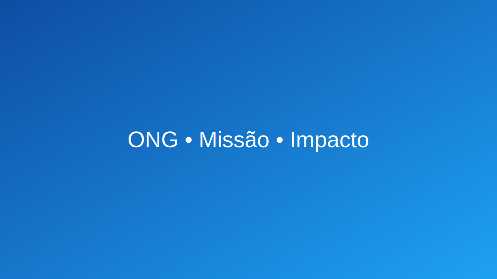

Nossa missão é ampliar o impacto social com transparência
Conectamos pessoas, projetos e recursos para transformar realidades locais.
Demonstração do Grid 12 colunas
12
6
6
4
4
4
Feedbacks de UI
Informação: inscrições para voluntariado abertas.
Sucesso: seu cadastro foi recebido!